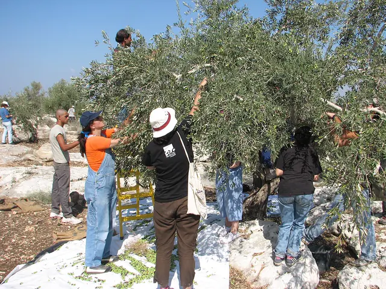
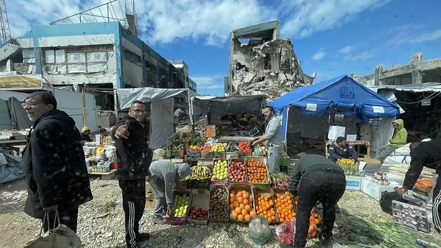
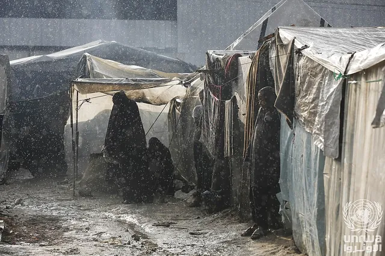
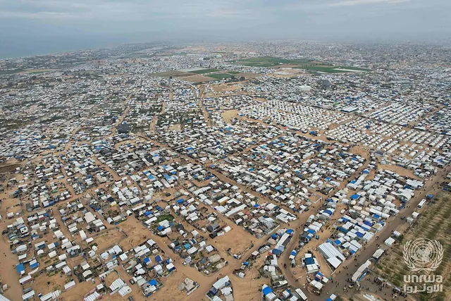
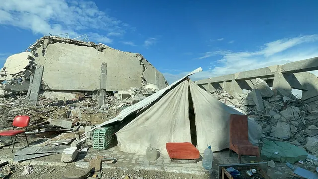
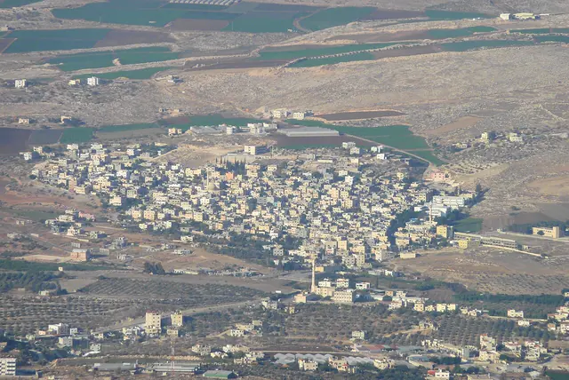
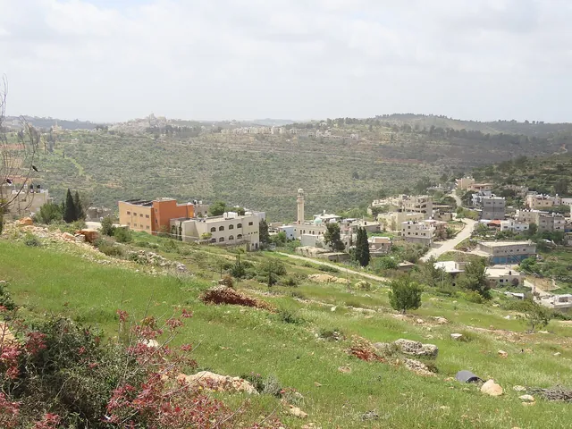

Stories
The human side of the day: people, places and what they lived through, reported at length.
Wednesday 14 October
· 5 reports · The whole day
05:49–06:41Dawn
‘He irrigated the tree with his blood’: olive farmers brace for a violent harvest
The National visits a Nablus-area grove where a father of four was killed by settlers on 7 October, and a family in Usarin still nursing its wounds.
Story · West Bank · The National

10:45–14:05Midday
Amnesty Germany gives 2026 human rights award to children’s lawyer Khaled Quzmar
The Ramallah-based lawyer has defended Palestinian children for nearly 40 years; the prize will be presented in Berlin on 25 November, WAFA reported.
Story · Prisoners · Amnesty International Germany / WAFA
Egyptian surgeons resume open-heart operations at Gaza City hospital
The team at al-Quds Hospital, working with HEAL Palestine, aims to operate on about 30 patients while more than 200 critical cases wait, WAFA reported.
Story · Gaza · WAFA (video report)
14:05–17:23Afternoon
Traders return to Khan Younis’s historic grain market
A WAFA video shows vendors back at work in the old market in southern Gaza as prices in the Strip keep climbing.
Story · Gaza · WAFA (video report)

Displaced families living in a Khan Younis cemetery patch tents before winter
A WAFA video shows families covering worn tents with nylon and tarpaulins against the rain, with no safe shelter as the wet season nears.
Story · Gaza · WAFA (video report)

Tuesday 13 October
· 3 reports · The whole day
10:45–14:05Midday
‘Displacement is like you do not have a homeland’: Gazans tell the Red Cross about three years of war
A father who stayed behind follows his son’s treatment abroad from a distance; a Red Crescent driver remembers the patients he took to the border.
Story · Gaza · ICRC (feature)

Displaced Gaza families rebuild tents with steel pulled from rubble before winter
In al-Mawasi, families are paying hundreds of shekels for salvaged steel frames and tarpaulins as the rainy season nears, WAFA reports.
Story · Gaza · WAFA (feature)

17:24–18:34Golden hour · Sunset
Gaza olive press damaged in the war restarts one of its seven lines
WAFA footage from west of al-Zawaida shows farmers bringing in this season’s olives while much farmland stays out of reach.
Story · Gaza · WAFA (video report)
Monday 12 October
· 2 reports · The whole day
18:35–24:00Dusk and night
Besieged for a month, 47 families in al-Ras al-Ahmar face being driven out
Four families have already left after armed settlers threatened them, and the last road in was cut by a trench, Quds News Network reports.
Story · West Bank · Quds News Network (report)

In Umm Safa, villagers cannot reach the cemetery to bury their dead
Settlers have cut the village off from its only cemetery since August, and six outposts now ring it, its council head told Mondoweiss.
Story · West Bank · Mondoweiss (feature)
